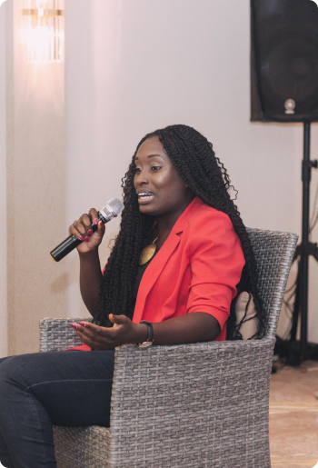
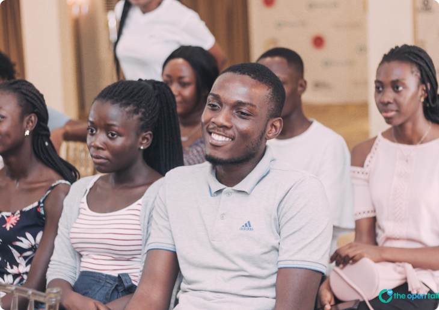

Our mission is to make youth life easier.
We started off with just the Open Talk Sessions in 2018 and considering the growth and expansion happening with new projects there’s been the need to rebrand and position under a big umbrella hence, the new name THE MAGNOLIA COMMUNITY.


